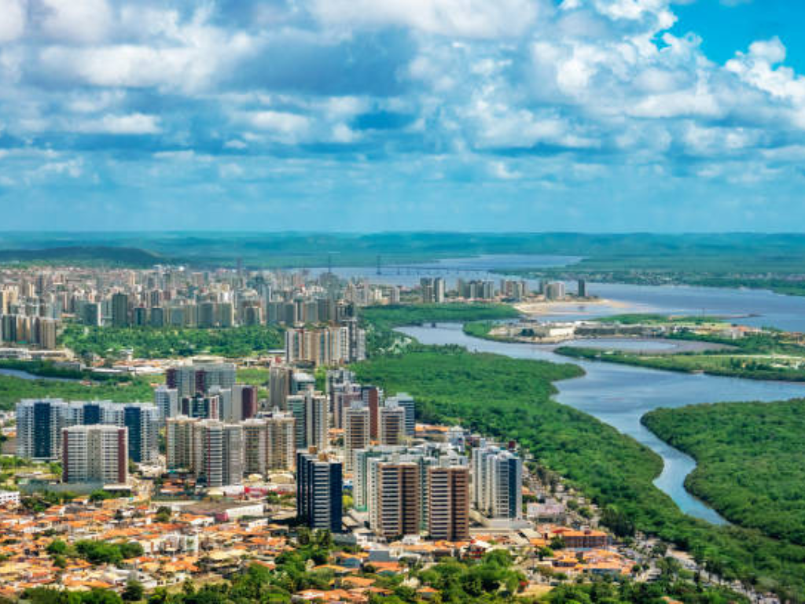

Sendo o menor estado brasileiro em extensão territorial, Sergipe surpreende os visitantes pela enorme facilidade de deslocamento e grande diversidade de atrativos históricos, como a cidade de São Cristóvão. Entre seus maiores tesouros estão o Cânion do Xingó, onde paredões de rocha cercam as águas verdes do Rio São Francisco, e a moderna capital Aracaju, planejada em formato de tabuleiro de xadrez e famosa por sua Orla de Atalaia, sinônimo de infraestrutura e limpeza.

Voltar